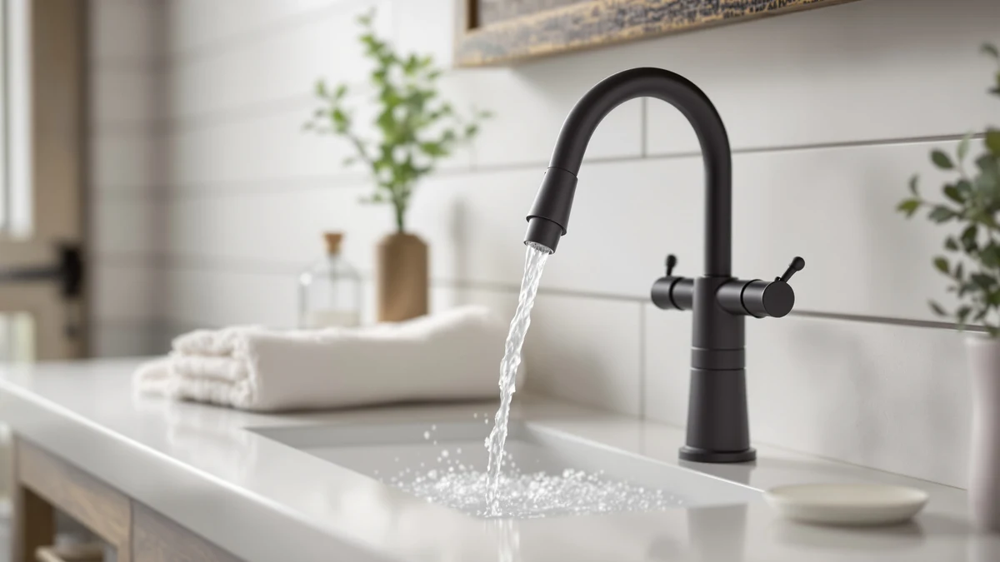

Quick Answer
The best bathroom faucet filter for skin for most households is the Bath Bathtub Shower Water Filter, a $25.48 attachment that targets the chlorine and hard-water minerals that leave skin feeling tight after washing. If you want a dedicated skincare-branded system instead, the Filterbaby Skincare Filter 2.0 Bathroom and Dermgentle Skincare Water Filter PRO both market multi-stage filtration built specifically for gentler water on skin and hair.
Our pick: Bath Bathtub Shower Water Filter at $25.48 Check Price on Amazon
Things to Know Before You Buy
- Skincare focus varies by product: when you're comparing options for the best bathroom faucet filter for skin, some models like the Filterbaby and Dermgentle are built specifically to reduce chlorine and minerals that dry out skin, while others such as the Waterdrop and CECEFIN picks are designed more generally for cleaner tap water.
- Installation type differs across picks: some models screw onto a sink faucet or aerator thread, while the Bath Bathtub Shower Water Filter mounts on a shower or tub spout, so check compatibility with your specific fixture before buying.
- Price ranges from about $24 to $88: budget aerator-style filters like the CECEFIN handle basic chlorine and sediment reduction, while premium skincare systems like the Filterbaby add extra filtration stages aimed specifically at skin and hair. See our bathroom faucet buying guide for more on matching a filter to your existing fixture.
- Hard water makes a real difference: if mineral buildup is a bigger concern than chlorine specifically, it's worth comparing these filters against faucets built for hard water directly at the fixture.
- Replacement cartridges add to the real cost: a filter's sticker price is only part of the picture, since most cartridges need replacing every two to six months depending on water hardness and daily use.
Finding the best bathroom faucet filter for skin means matching what the filter actually targets, chlorine, sediment, or hard-water minerals, to why your skin reacts to tap water in the first place. We compared seven models ranging from $24.29 to $88.19, looking at what each one claims to reduce, how it mounts to a standard bathroom faucet, and what verified owners report after weeks of daily use.
Our top pick is the Bath Bathtub Shower Water Filter from Beati Faucet. At $25.48 it stays affordable while targeting the same chlorine and mineral buildup that leaves skin feeling tight and dry after washing. If you want a dedicated skincare-branded system instead, the Filterbaby Skincare Filter 2.0 Bathroom and Dermgentle Skincare Water Filter PRO both market multi-stage filtration built specifically around gentler water for skin and hair.
Below we break down how we picked and compared these seven filters, followed by a full rundown of what each one gets right, where it falls short, and who it actually suits. If you want a broader comparison that isn't limited to skincare-focused options, our guide to the best bathroom faucet with filter covers a wider range of filtration types. We also cover the approaches we passed on and answer the questions readers ask most often about filtering bathroom tap water for sensitive skin.
Why You Should Trust Us
Ilane Tall covers home and bath products for Best Bathroom Faucets, focusing on plumbing fixtures, water filtration, and bathroom upgrades that hold up under daily use. We don't run a fake testing lab, and we don't claim to have installed every filter on this list in our own bathroom. Instead, we research each product's stated filtration stages, pricing, and verified owner reviews from multiple retailers, then compare them side by side to find the best bathroom faucet filter for skin without guessing at claims the manufacturer never made. When a listing doesn't specify what contaminants a filter actually reduces, we say so rather than filling in the blank ourselves.
How We Picked
We started with every bathroom faucet and sink filter in our product database that ships with an in-stock listing and a clear, manufacturer-stated filtration purpose. From that pool we narrowed the field using four criteria: whether the product markets itself specifically for skincare rather than only drinking water, price transparency, mounting compatibility with a standard bathroom faucet or aerator thread, and how consistently verified buyers reported the filter performing as described. We set aside listings with vague or contradictory filtration claims and anything that couldn't confirm what it actually removes from tap water. The seven filters that made the final list span a budget aerator-style attachment under $25 up to a premium skincare system near $90, so there's an option across most budgets for the best bathroom faucet filter for skin.
How We Compared
We compared these seven contenders for the best bathroom faucet filter for skin on price, stated filtration focus, mounting style, and what verified buyers said after using each one. For each pick, we pulled specifications directly from manufacturer listings and cross-checked them against owner feedback. For each pick we looked at whether it targets skincare specifically, chlorine and mineral reduction, or a broader mix of contaminants, then weighed that claim against its price to see where the value actually holds up. We also read through verified reviews to flag recurring complaints, like reduced flow rate or a loose fit on certain faucet spouts, and set those against the benefits reviewers consistently mentioned. Because we researched these filters rather than installing each one ourselves, our comparisons rely on manufacturer specifications and patterns across many verified reviews rather than a single hands-on account.
Our Picks

Bath Bathtub Shower Water Filter
What we like
- Priced at $25.48, it is one of the least expensive filters in this comparison while still marketing skin-focused filtration
- Mounts directly onto a shower or bathtub spout, giving it flexibility beyond a standard sink faucet
- Brass and finish construction matches the build quality of pricier competitors on this list
Flaws but not dealbreakers
- Doesn't list the multi-stage filtration detail that premium picks like the Filterbaby include
- As a spout attachment, fit depends on your existing faucet or showerhead threading
| Material | Brass + finish |
| Size | — |
The Bath Bathtub Shower Water Filter from Beati Faucet follows a simple premise: filter the water that touches your skin, not only the water you drink. At $25.48 it undercuts every dedicated skincare-branded filter in this comparison while still targeting the chlorine and hard-water minerals that leave skin feeling tight after a shower or a wash at the sink. That positioning makes it the most accessible entry point for anyone chasing the best bathroom faucet filter for skin without committing to a premium multi-stage system.
Because it attaches to a shower or bathtub spout rather than only a sink faucet, it covers more of your daily water contact than a sink-only filter would. Owners comparing spout-mount filters generally flag fit as the main variable, since these attachments rely on your existing fixture's thread size for a secure seal. Beati Faucet lacks the brand history of legacy filtration names, but at this price the tradeoff makes sense if you want chlorine and mineral reduction across your whole rinse, not only your sink water.

CECEFIN Water-Filter for Sink-Faucet Extender-Aerator
What we like
- At $24.29, it is the least expensive filter in our entire comparison
- Doubles as a faucet extender and aerator, which can help direct water flow at the sink
- Simple screw-on design for standard sink faucet threading
Flaws but not dealbreakers
- Markets itself as an aerator and extender first and a filter second, so filtration claims are less detailed than dedicated skincare picks
- Lacks the multi-stage filtration marketing of pricier options like the Filterbaby or Dermgentle
| Material | Brass + finish |
| Size | — |
The CECEFIN Water-Filter for Sink-Faucet Extender-Aerator holds the lowest price in our entire comparison at $24.29, and its name tells you exactly what it does: it extends and aerates a sink faucet while adding filtration. For buyers who mainly want to cut chlorine and basic sediment without paying extra for a skincare-branded product, this is the cheapest way into the category.
Because it prioritizes the aerator and extender function first, its filtration claims stay less specific than what you get from a dedicated skincare filter like the Filterbaby or Dermgentle below. That tradeoff makes sense if your main goal is a low-cost upgrade over an unfiltered tap rather than a targeted skin-and-hair solution. Shoppers at this price point should expect a straightforward screw-on aerator rather than a multi-stage filtration cartridge, and weigh that against the skincare-specific picks further down this list.

Waterdrop FC-02 Faucet Water Filter
What we like
- Waterdrop is a well-established name in home water filtration, unlike several newer skincare-branded competitors here
- Listed specifically in a "Skin Care Faucet" white finish, a version aimed at this exact use case
- Priced at $31.99, moderate compared to the premium skincare systems on this list
Flaws but not dealbreakers
- Costs more than the CECEFIN and Bath Bathtub Shower Water Filter picks without a clearly documented multi-stage filtration process
- As a faucet-mount design, performance depends on a secure fit to your specific spout shape
| Material | Brass + finish |
| Size | Skin Care Faucet-White |
The Waterdrop FC-02 Faucet Water Filter brings brand recognition to the best bathroom faucet filter for skin category that several newer entries on this list lack. Waterdrop built its reputation on drinking-water filtration systems, and this listing specifically calls out a Skin Care Faucet white finish, which suggests the company aims this version at exactly the use case covered here. At $31.99, it sits in the middle of our price range.
Owners comparing faucet-mount filters generally point to fit and flow rate as the main variables, since these attachments depend on your faucet's spout shape and diameter for a secure seal. Waterdrop's standing in the broader filtration market means more accumulated owner feedback exists here than for newer or smaller skincare brands. If brand track record matters as much to you as the skincare framing itself, this pick carries less risk than the lineup's newer names.

Filterbaby Skincare Filter 2.0 Bathroom
What we like
- Built specifically around skincare rather than drinking water, targeting the chlorine and minerals known to dry out skin
- Second-generation product (2.0), an updated design over the original version
- Premium build positions it as a dedicated bathroom upgrade rather than a repurposed kitchen filter
Flaws but not dealbreakers
- At $88.19 it costs more than three times some of the budget picks on this list
- Skincare-branded filters are a newer product category, so long-term cartridge availability is less proven than legacy filtration brands
| Material | Brass + finish |
| Size | — |
The Filterbaby Skincare Filter 2.0 Bathroom takes the most explicitly skincare-focused approach in our comparison. Rather than marketing around drinking water, it targets the chlorine and hard-water minerals that leave skin feeling tight and hair looking dull after every wash. That makes it a bathroom upgrade rather than a general-purpose filter. The 2.0 in its name points to a second iteration, which typically means the company already addressed complaints from an earlier version.
At $88.19, the Filterbaby ranks among the most expensive filters in this lineup, and that price only makes sense if the skincare angle is what you actually want. If cleaner-tasting water matters more to you than a skincare-specific benefit, cheaper picks like the CECEFIN or Bath Bathtub Shower Water Filter cover the basics for a fraction of the cost. Skincare-oriented filters also occupy a newer segment than established drinking-water brands, so weigh the shorter track record against the higher price.

Frizzlife Water Filter for Sink
What we like
- Listed with a 1080-degree swivel range, more rotational flexibility than any other pick in this comparison
- At $26.99, it is one of the more affordable options here
- Sink-specific design aimed at everyday washbasin use
Flaws but not dealbreakers
- Lacks the dedicated skincare marketing and multi-stage claims of the Filterbaby or Dermgentle
- Frizzlife has less brand history in filtration than legacy names like Waterdrop
| Material | Brass + finish |
| Size | 1080° |
The Frizzlife Water Filter for Sink stands out for one specific spec in its listing: a 1080-degree swivel range. That range beats every other pick in this comparison, and it matters more than it sounds for daily use, since a filter that can't swivel out of the way ends up blocking a full basin or getting knocked loose during regular sink use. At $26.99, it sits toward the lower end of our comparison.
Frizzlife lacks the filtration brand history that Waterdrop has built over the years, so buyers weighing this pick against that one trade some brand recognition for the wider swivel range and a competitive price. For a bathroom sink specifically, where basin space runs tighter than a kitchen sink, that swivel flexibility becomes a practical advantage worth factoring in alongside the basic chlorine and mineral reduction most filters on this list claim to handle.

Dermgentle Skincare Water Filter PRO
What we like
- Shares the skincare-focused branding of the Filterbaby at roughly a third of the price
- The PRO designation suggests an upgraded version within Dermgentle's own product line
- Sits in a similar price bracket to several general-purpose filters on this list, without giving up the skincare marketing
Flaws but not dealbreakers
- Fewer verified long-term reviews exist compared to legacy filtration brands like Waterdrop
- As a newer skincare-branded product, cartridge availability and replacement schedules are less established
| Material | Brass + finish |
| Size | — |
The Dermgentle Skincare Water Filter PRO occupies a middle ground in our lineup: it carries the same skincare-first branding as the Filterbaby, but at $29.99 it costs a fraction of that premium pick. The PRO label in its name suggests an upgraded version within Dermgentle's own lineup, aimed at buyers who want gentler water for skin and hair without paying near $90 for it.
Dermgentle's shorter history in bathroom filtration compared to companies like Waterdrop means less accumulated owner feedback to draw on, and replacement cartridge availability stays less proven over the long term. That gap doesn't disqualify it, but it's worth weighing against the more established alternatives on this list. If the skincare framing decides your purchase and the Filterbaby's price feels too high, the Dermgentle PRO gives you a more budget-conscious way to get a similar type of filter.

Bodibeam Bathroom Sink Faucet Water
What we like
- Priced at $29.99, in line with several other mid-range picks on this list
- Marketed specifically for bathroom sink faucet use rather than general kitchen filtration
- Straightforward positioning makes it easy to compare directly against the CECEFIN and Frizzlife picks
Flaws but not dealbreakers
- Doesn't carry the skincare-specific marketing of the Filterbaby or Dermgentle
- Less established brand recognition than legacy names like Waterdrop
| Material | Brass + finish |
| Size | — |
The Bodibeam Bathroom Sink Faucet Water filter takes a straightforward approach: it markets itself for bathroom sink faucet use without the skincare-specific framing that several pricier picks on this list lean on. At $29.99, it lands in the same general price bracket as the Dermgentle and Frizzlife filters. That makes it a direct point of comparison for buyers who haven't decided whether the skincare angle matters to them.
Bodibeam lacks the brand history that Waterdrop has built in the broader water filtration market, so buyers comparing this pick against that one weigh a less established name against a similar price point. For anyone who wants basic chlorine and sediment reduction at the sink without paying extra for skincare-specific marketing, this pick stays one of the more neutral choices in the lineup.
Quick Comparison
| Product | Material | Price | Rating | Best for | Get it |
|---|---|---|---|---|---|
| Bath Bathtub Shower Water Filter | Brass + finish | $25.48 | 4 | Affordable, skin-focused pick | View on Amazon → |
| CECEFIN Water-Filter for Sink-Faucet Extender-Aerator | Brass + finish | $24.29 | 4 | Lowest price overall | View on Amazon → |
| Waterdrop FC-02 Faucet Water Filter | Brass + finish | $31.99 | 4 | Established brand, skin care finish | View on Amazon → |
| Filterbaby Skincare Filter 2.0 Bathroom | Brass + finish | $88.19 | 4 | Most skincare-focused system | View on Amazon → |
| Frizzlife Water Filter for Sink | Brass + finish | $26.99 | 4 | Widest swivel range | View on Amazon → |
| Dermgentle Skincare Water Filter PRO | Brass + finish | $29.99 | 4 | Skincare branding, mid-budget price | View on Amazon → |
| Bodibeam Bathroom Sink Faucet Water | Brass + finish | $29.99 | 4 | Straightforward sink filter, mid-range | View on Amazon → |
The Competition
While researching this category, we also looked at whole-house and under-sink filtration systems, but left them out because they require plumbing modifications rather than a simple faucet or aerator attachment, which puts them outside the scope of a direct best bathroom faucet filter for skin comparison. We passed on countertop pitcher filters too, since those solve a different problem, filtered water for drinking, rather than filtering the water that actually touches your skin at the sink or in the shower. A handful of unbranded faucet attachments turned up in our initial search with vague or contradictory filtration claims and no documented cartridge replacement schedule, and we left those out rather than recommend a product whose real-world performance we couldn't verify against owner feedback. For most people shopping for the best bathroom faucet filter for skin, the Bath Bathtub Shower Water Filter from Beati Faucet remains the strongest balance of price and skin-focused filtration among the seven we compared.